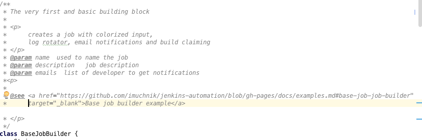

You don't know JAC!
Dev CoP, Nov 24th
by Irina Muchnik
... but ... you are about to find out...
J. A. C.
stands forJenkins As Code.
Any questions?
kidding....A quick recap
- First started by David Griesen and Dan Davis around May 2015
- Dan did a Dev CoP talk in September
- I joined the effort at the end of September
- Vic and I are currently assigned to actively work on it
Repo
https://github.com/cfpb/jenkins-automation
Guiding principles
1. Make it valuable 2. Make it easy 3. Make it fast 4. Make it pretty and always [YAGNI](https://en.wikipedia.org/wiki/You_aren%27t_gonna_need_it), [DRY](https://en.wikipedia.org/wiki/Don%27t_repeat_yourself) and [KISS](https://en.wikipedia.org/wiki/KISS_principle)So.. what's new?
- We have contibuted to job-dsl project
- Templates are gone
Why?It was fragile and brittle solution
-
Replaced by Groovy builders
Why?Solves our passing parameters problemsno "hard-coded" jobsLess Jenkins pollution
Here is a simple example
```
import jenkins.automation.utils.SiteMonitorJobBuilder
new SiteMonitorJobBuilder(
name: "my-site-pulse-check",
description: "Sample url pulse check job",
cronSchedule: "@daily",
urls: ["http://google.com","http://yourethemannowdog.ytmnd.com/"]
).build(this);
```
Slightly more involved example
```
import jenkins.automation.utils.JsJobBuilder
String basePath = 'JsJobSamples'
List developers = ['irina.muchnik@cfpb.gov', 'daniel.davis@cfpb.gov']
def repos = [
[name: 'jenkins-automation', url:"https://github.com/cfpb/jenkins-automation@2.0"],
[name: 'collab', url: "https://github.com/cfpb/jenkins-automation"]
]
folder(basePath)
{description 'This example shows how to create jobs using Job builders.'}
new JsJobBuilder(
name: "$basePath/MyProjectJavascriptJob",
description: 'An example using a job builder for a Javascript build jobs project.',
repos: repos,
emails:developers,
use_versions: true )git a
.build(this)
```
Docs on builders and other useful stuff
http://cfpb.github.io/jenkins-automation/Auto generated
From groovydoc comments
Like this:

How do you get started?
Starter repo
https://github.com/cfpb/jenkins-as-code-starter-project/
What's in the box
- Automated Gradle Build
- All nesessary dependencies
- Directory structure
- Examples
- Test infrastructure and examples
So, what's next?
- Continue developing builders and utilities
- Move towards "one-click" automation
- Port existing production orphan projects jobs
So, what's next? cont'd
?
Do I have more time?
Demo?
Bonus slides?
Testimonials
Marc Esher has tried on Qu and he described the experience as
"Ejoyable! " "And Cool! " "And Fun! "